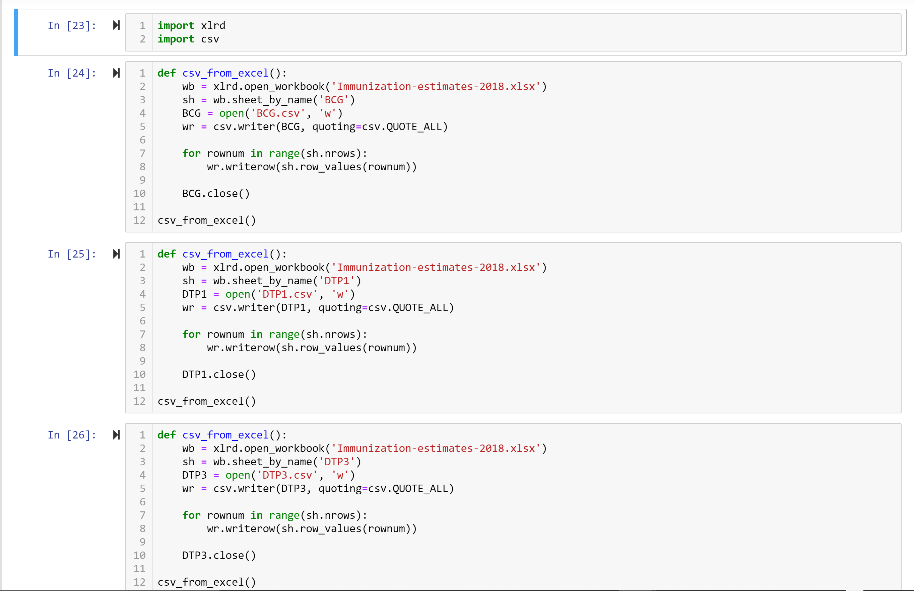

1. Separate excel worksheets (vaccines) to different CSVs
Our original dataset was one CSV and an Excel workbook with fourteen different worksheets for each of the vaccines we analyzed. We separated each of these worksheets into multiple CSV's in order to extract the data more easily.
